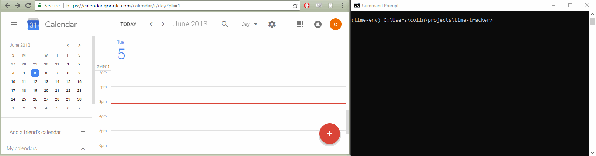
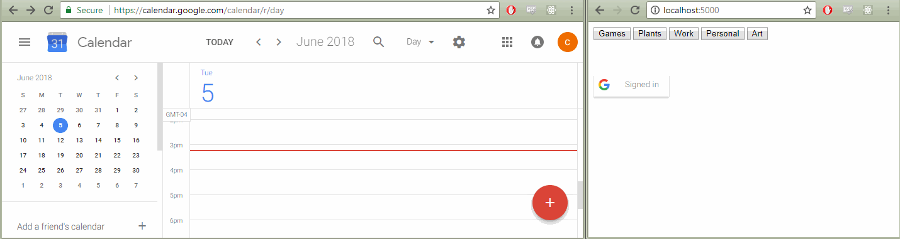
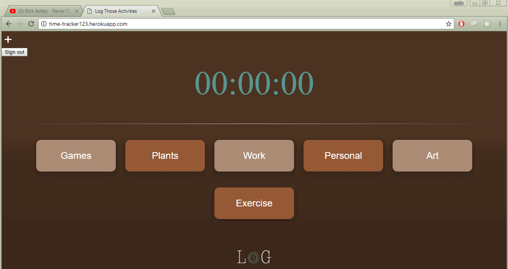
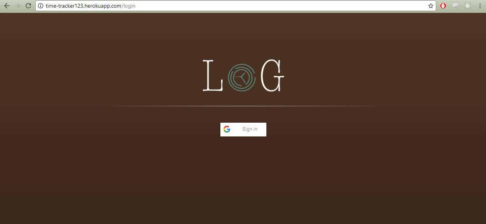

In order to hold myself responsible for how I spend my time I needed a web app which allows me to accurately track what I do and log the results in Google Calendar. To fill this need I created Log.
The project started off as a simple command line tool.
I then moved to get the time tracker working in a browser. This is an early version.
Next came some styles to make it look pretty for the user. Here's a gif demonstrating how one can close the browser and the app will resume at the correct time.
I used Google's login feature to add users to Log. Each user has their own list of activities, and their data automatically saves to their own calendar. By the way: working with OAuth is death.
